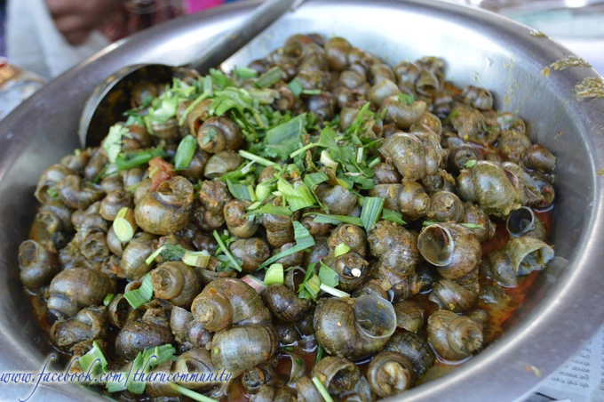
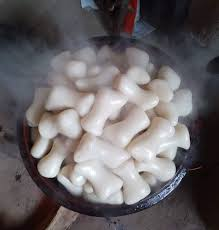

タル族の文化
タ―ルは、ネパール南部の山と内側のテライに住む先住民族のコミュニティです。彼らは非常に豊かで多様な食文化を持っています。食文化は主に彼らが住んでいる肥沃なenvironment濫原、森林、環境によって特徴付けられます。米は主要な主食であり、地元ではandikとして知られている様々なもち米（アナダイ米） タールコミュニティによって伝統的に栽培されています。川や水域からの魚、カニ、カタツムリ、ムール貝などは、タールの食文化の中心です。肉の源は、豚、イノシシ、鶏、野生のウサギ、ハトの肉などです。 、マメ科植物、野生キノコ、およびその他の野生野菜の品種、および緑の品種が広く食べられています。 マーギはタールコミュニティの最大の祭りであり、新年とも見なされます。祭りは、ディークリー（西部のクールコミュニティで食べられる）、バギヤ（東部のクールコミュニティで食べられる）、チチャール、ティールコラドゥ、ゴンヒ、ポーク、バリヤ、エアカンチャン、テレパウルロティなどのさまざまな珍味を食べることで祝われます。
|  |  | |
グンギ |
ナガルロチ |
チタル |